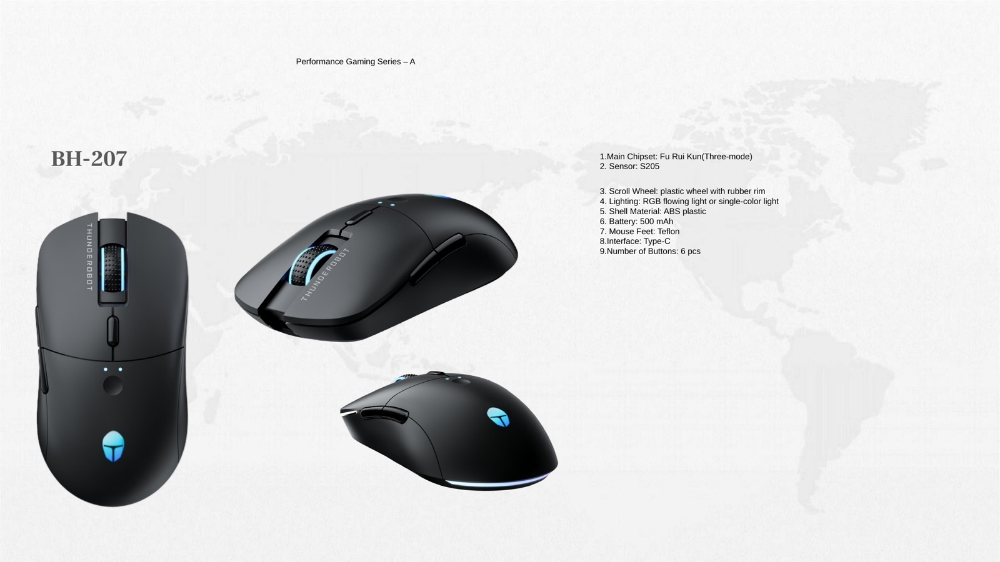

Gaming Headsets and Accessories
Compare wired RGB, 2.4G wireless and hero-model directions for gaming accessory ranges, samples and private-label projects.

Private label gaming accessories and audio planning
Compare TALRIVO gaming headsets and related gaming audio accessories, Type-C earphones, Bluetooth speakers, TWS earbuds and Bluetooth headphone directions using real model pages, samples, customization steps and buyer-focused RFQ preparation.
Short answer
A useful private-label gaming accessories or audio project starts with the destination market, sales channel, product category and quantity range. Buyers can then shortlist models, review samples and discuss branding around the approved product version.
Product categories
These cards connect to existing TALRIVO category and model pages. Final specifications, samples, customization options and availability should be confirmed for the selected product.
Compare wired RGB, 2.4G wireless and hero-model directions for gaming accessory ranges, samples and private-label projects.

Review Type-C earphone directions for mobile accessory ranges, connection questions, samples, packaging and product information.

Review BH series gaming mouse, office mouse, vertical mouse and AI smart mouse references for private-label accessory sample planning.

Review BH-101 as a Bluetooth 5.4 speaker direction for gift, retail and lifestyle audio ranges, including RGB design, USB/TF playback, sample questions, logo area and packaging discussion.

Review TWS appearance, charging case direction, supplied product images, sample questions and packaging needs by selected model.

Compare over-ear Bluetooth product directions for lifestyle audio ranges, model samples, logo area and retail packaging discussion.
Accessory range planning
For mixed consumer audio projects, Type-C earphones and Bluetooth speakers can support practical accessory channels beside gaming headsets, TWS earbuds and Bluetooth headphones.
Project workflow
Share the destination country, buyer type, sales channel and product role before asking for a broad catalogue or quotation.
Explain whether the project needs gaming headsets, TWS earbuds, Bluetooth headphones, Bluetooth speakers, Type-C earphones or a mixed range.
Confirm appearance, connection, controls, comfort, microphone or audio use, accessories and product finish by category.
After model review, send quantity range, logo needs, packaging direction, sample timing and destination-market document questions.
Project evidence
G941 connects a dedicated product page, supplied color images, an official TALRIVO YouTube demonstration, sample questions and RFQ preparation without publishing unverified prices or performance data.
Use the model page for supplied images, receiver detail, boom microphone, buyer questions and sample contact paths.
Use the video as supporting product evidence when discussing microphone noise-reduction direction and sample review.
After model selection, use the customization page for logo, color, packaging, manual language and accessory-set discussion.
Share the market, sales channel, model interest, quantity range, branding needs and sample timing.
Product routes
Product FAQ
Yes. Buyers can shortlist gaming headsets and related audio products, review samples and then discuss logo, color, packaging, manual language and accessory direction for the selected product version.
Gaming headsets, Bluetooth headphones, TWS earbuds, Bluetooth speakers and Type-C earphones can be reviewed depending on the brand plan and selected model.
Yes. Buyers can use this page to compare Type-C earphones, Bluetooth speakers and gaming headsets as part of a focused private-label audio range before sample selection.
Include the destination market, sales channel, product category, model interest, quantity range, target positioning, sample timing, branding needs, packaging direction and document questions.
No. The model and sample version should be reviewed first because the logo area, accessories, product information and packaging direction depend on the selected product.
No. Logo area, color direction, accessories, packaging and available product information should be confirmed for each selected model and project.
Share product category, destination market, sales channel, quantity range, target positioning, branding needs and sample timing. TALRIVO can recommend suitable model directions for review.